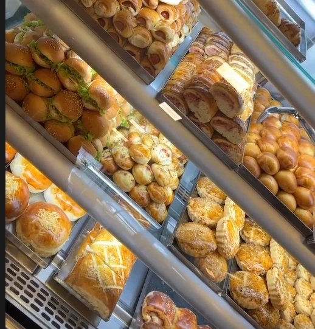
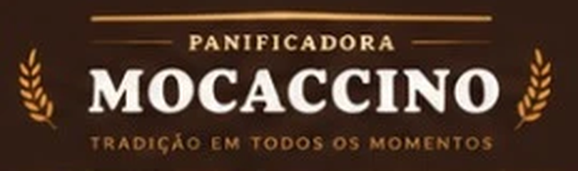
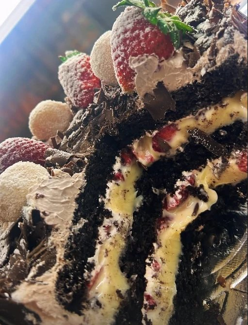
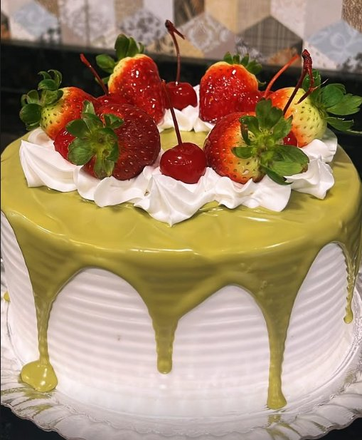
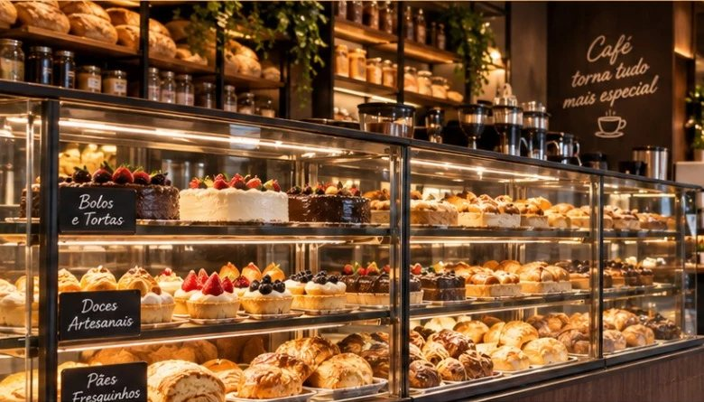

Salgados e pães
Folhados, pães recheados e fornadas quentinhas ao longo do dia.

Mais que uma padaria, um bom encontro.
Bem-vindo à
Uma experiência completa em um só lugar: padaria, confeitaria, almoço, café colonial e muito mais, com produtos sempre fresquinhos, atendimento acolhedor e o sabor que faz parte da sua rotina.
Nossos produtos

Folhados, pães recheados e fornadas quentinhas ao longo do dia.

Chocolate, morango e recheios cremosos para cada comemoração.

Bolos decorados sob encomenda para festas e momentos especiais.

Nossa história
Do café da manhã ao lanche da tarde, a Mocaccino reúne família e amigos em torno de uma boa mesa. Receitas cuidadosas, ingredientes selecionados e um ambiente aconchegante para o seu dia a dia em Curitiba.
Café torna tudo mais especial.
Café colonial
Pães, frios, bolos, quitutes e bebidas quentes servidos com carinho. Reserve sua mesa e viva um momento especial.
Reservar mesaContato
Curitiba — PR
(inserir endereço completo)
Seg a Sáb: 6h30 às 20h
Dom: 7h às 13h
(confirmar horários)
WhatsApp
(inserir número)